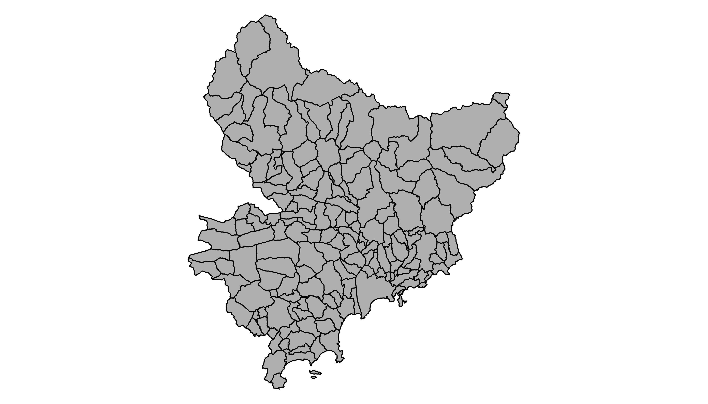

Related chart types

Map

Choropleth

Hexbin map

Cartogram

Connection

Bubble map
Geojson files
are a common way to store geospatial data. This post explains how to
read it with R and the sf package, and how to
plot it in base R or with ggplot2.
If you did not find the geospatial data you need in existing R packages (see the map section), you need to find this information elsewhere on the web.
It will often be stored as a .geoJSON format. This post
explains how to read it.
.geoJSON fileYou need to dig the internet to find the geoJSON file you are interested in. For instance, this URL provides a file containing french region boundaries.
You can load it in R with:
# Download to a temporary file
tmp_geojson <- tempfile(fileext = ".geojson")
download.file("https://raw.githubusercontent.com/gregoiredavid/france-geojson/master/communes.geojson",
tmp_geojson)
# Let's read the downloaded geoJson file with the sf library:
library(sf)
my_sf <- st_read(tmp_geojson, quiet = TRUE)That’s it! You now have a geospatial object called
my_sf. I strongly advise to read this post to learn
how to manipulate it.
Just in case, here is how to plot it in base R and with
ggplot2.
base RThe basic plot() function knows how to plot a geospatial
object. Thus you just need to pass it my_sf and add a
couple of options to customize the output.

# Select only the region #6 as you would do with a data frame
my_sf_region_6 <- my_sf[substr(my_sf$code, 1, 2) == "06", ]
par(mar=c(0,0,0,0))
plot(my_sf_region_6$geometry, col="grey")ggplot2It is totally possible (and advised IMO) to build the map with ggplot2, using the
geom_polygon() function as described below.
# Plot it
library(ggplot2)
ggplot(my_sf_region_6) +
geom_sf(fill="#69b3a2", color="white") +
theme_void() Related chart types